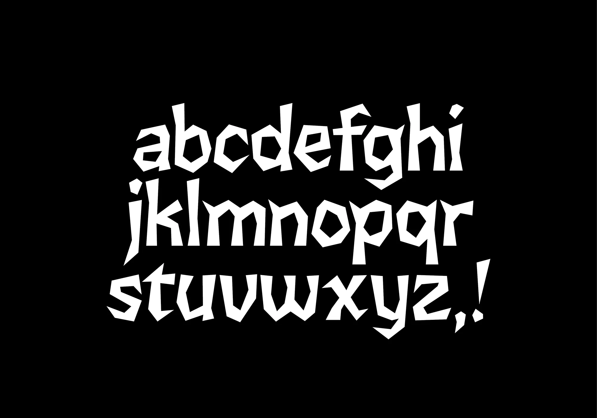
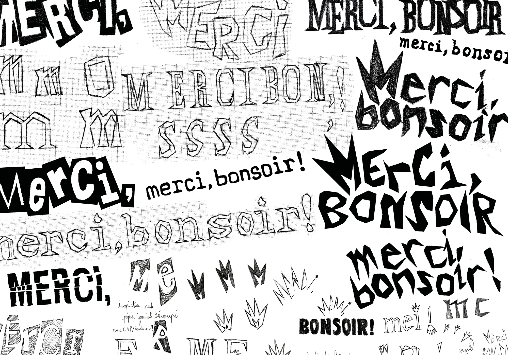
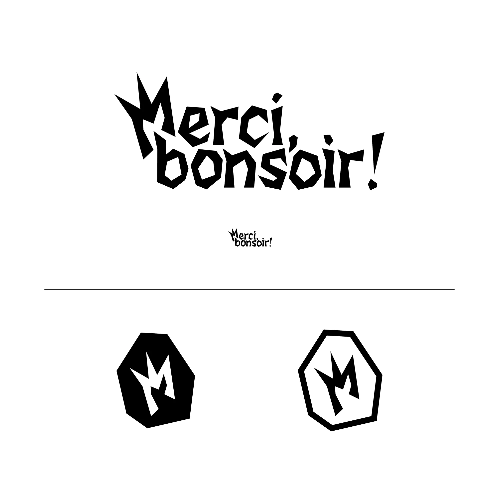
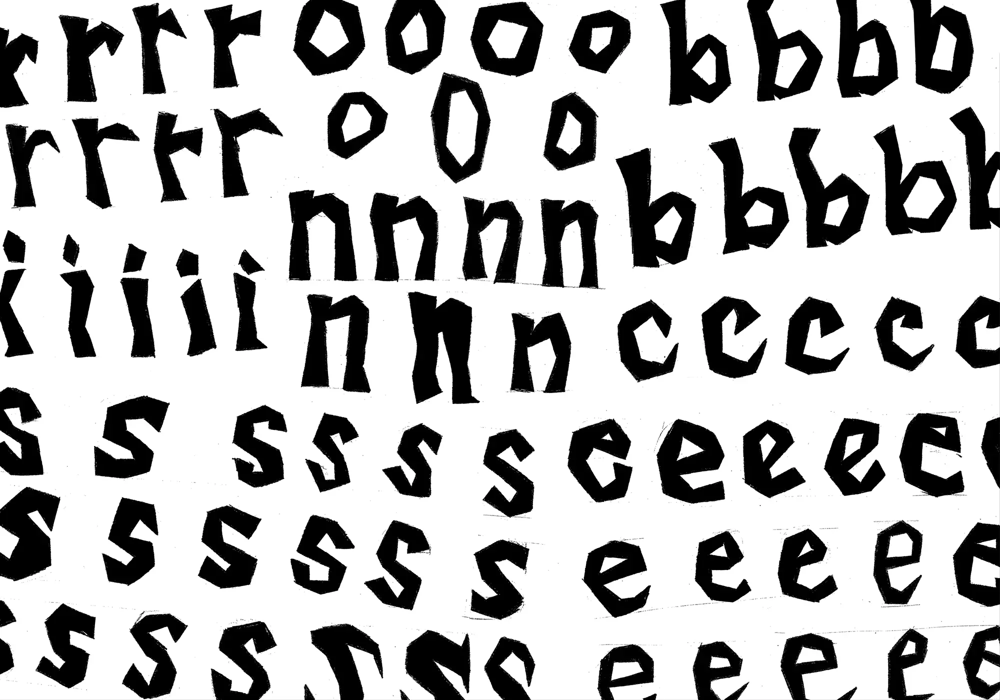
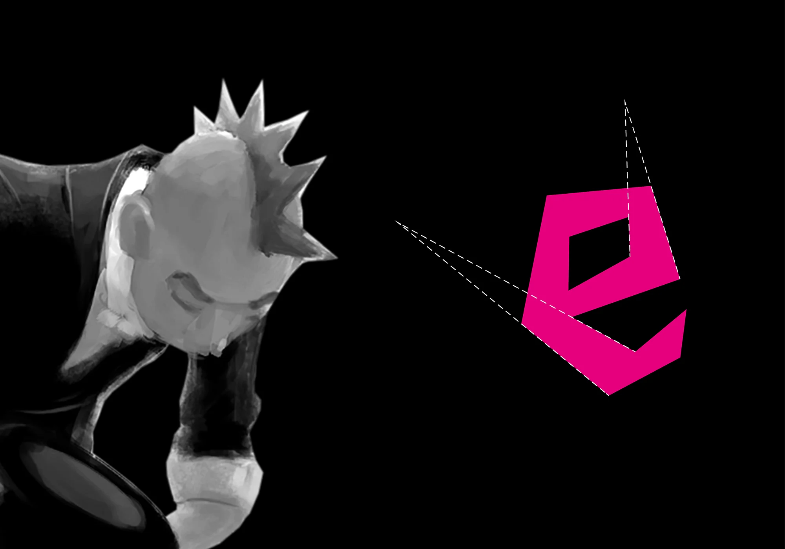
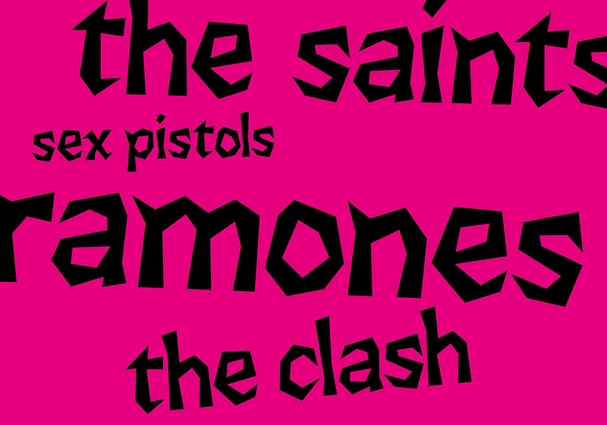
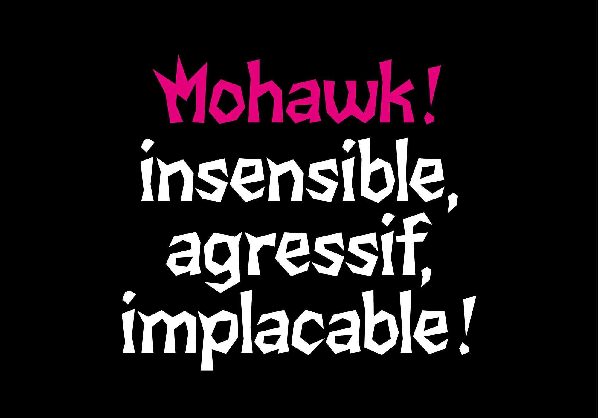
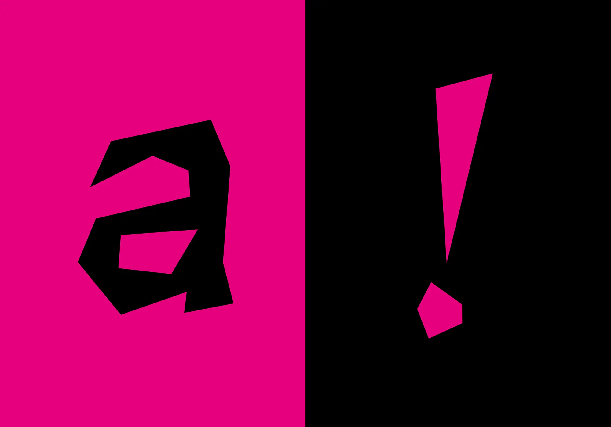

Mohawk
Dessin de caractères, 2025
Projet d’école
La Mohawk est une typographie inspirée de la crête iroquoise, coiffure emblématique popularisée par le mouvement punk au début des années 80, elle puise ses origines chez les peuples autochtones d’Amérique du Nord. Son dessin, piquant et cassant, évoque l’aspect acéré formé par les cheveux. Chaque caractère est composé autour d’un principe de lignes convergentes, il n’existe aucune parallèle, elles convergent vers un même point pour suggérer ou former une pointe.
Alphabet dessiné dans la continuité d’un projet de logotype pour le festival Merci, Bonsoir !.